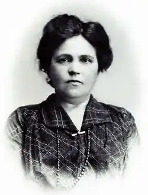
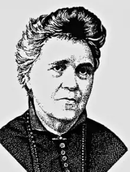
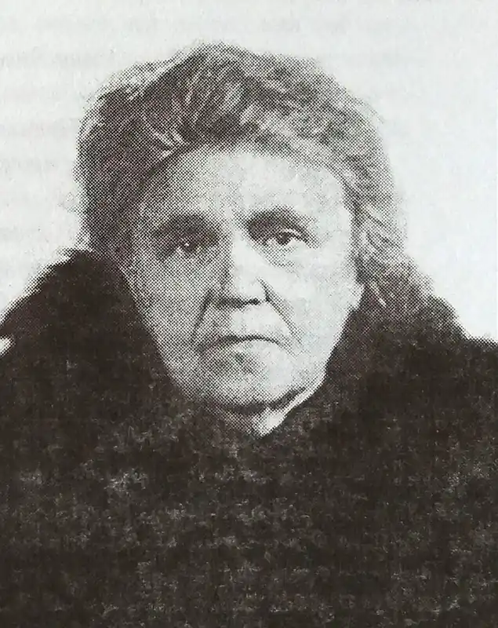

Старицька-Черняхівська Людмила Михайлівна
(17. 08. 1868, м. Київ, — 1941)
Письменниця, літературний критик, громадський діяч В історію європейської літератури вагомий внесок зробила й ціла плеяда українських жінок-письменниць. Серед них згадуємо ім'я вітчизняної письменниці, літературного критика, громадського діяча — Людмили Михайлівни Старицької-Черняхівської. Народилася Людмила Старицька 29 серпня 1868 р. у Києві в родині відомого письменника, драматурга, громадського діяча Михайла Петровича Старицького та Софії Віталіївни Лисенко — рідної сестри композитора М. Лисенка. Окрім домашнього навчання, Людмила здобувала освіту в пансіоні Криницької, навчалася в одній із кращих приватних жіночих гімназій Києва В. Ващенка-Захарченка. Ще в дитинстві вона склала перші казочки та вірші для молодшої сестри. В п'ятнадцять років Людмила вже писала для домашнього театру містерії віршем, у рукописному журналі гімназисток вмістила нарис "За Україну". Родина Старицьких була осередком українського духу Наддніпрянщини, тут не згасала національна ідея, пам'ять про славне минуле українського народу, його побут, звичаї, панувала особлива літературна атмосфера, звучала співоча українська мова. Бували тут діячі Громади — О. Русов, М. Драгоманов, П. Чубинський Людмила постійно спілкувалась з В. Антоновичем, М. Садовським, М.Кропивницьким, П. Житецьким, М. Заньковецькою. У 1887 р. альманах "Перший вінок" (Львів) опублікував поезію дівчини "Панахида", присвячену Т. Шевченкові. Тут уперше надрукувала свої вірші й Леся Українка. Рання поезія Л. Старицької привернула до себе увагу критики, схвально про неї відгукнулися П. Куліш, І. Франко. У 1888-1893 рр. Л. Старицька брала активну участь у роботі літературного гуртка "Плеяда". У гостинній господі М. Лисенка постійно збиралися О. Пчіл-ка, В. Самійленко, Леся Українка, М. Славинський, М. Обачний, Г. Григоренко. Ол. Черняхівський. Окрім оригінальних творів, гуртківці перекладали шедеври світової літератури українською мовою, зокрема Данте, Мольєра, Беранже, Гейне, Гете, Шіллера, Андерсена та ін. Л. Старицька опублікувала низку оповідань і статей російською мовою в "Русском богатстве", "Русской мысли", "Киевской старине". Її ранні твори друкувалися в "Правді" ("Перед бурею"), "Дзвінку" ("Пожежа", "Ледащо", "Три вечора"), "Зорі" ("Мрія"), в альманахові "Складка" ("Три друга"). Людмила стає учасницею театру корифеїв, театру самого М.Старицького, була серед організаторів, учасників театрального аматорства Наддніпрянщини. Вона організовує аматорські гуртки, пише для них водевілі, ліричну драму "Сафо", одну з кращих своїх драм "Аппій Клавдій". Поезія Л. Старицької була представлена І. Франком в антології "Акорди" та С. Єфремовим в "Українській музі". Із заснуванням у 1895 р. у Києві Літературно-артистичного товариства Л. Старицька входить до його правління, допомагає організовувати літературно-художні та наукові вечори, присвячені історії та культурі українського народу. Людмила бере активну участь у роботі "Історичного товариства Нестора-літописця" в Києві, "Наукового товариства імені Шевченка" у Львові. 27 січня 1896 р. Л. Старицька виходить заміж за київського лікаря Олександра Григоровича Черняхівського. Згодом він стане відомим неврогістологом, професором, доктором медицини, автором численних праць у цій галузі, упорядником словника медичних термінів українською мовою. 1900 р. у них народилася донька Вероніка. Л. Старицька-Черняхівська — визначний театрознавець. Вона написала один із найперших нарисів з історії нового українського театру "Двадцять п'ять років українського театру". Разом з батьком Людмила Михайлівна створила трилогію "Богдан Хмельницький", історичні твори "Останні шуліки", "Червоний диявол", а також широко відомі — "Останні орли", "Розбійник Кармалюк" і мало знані — "Руїна", "Молодість Мазепи". Перша чверть XX ст. стала для літераторки періодом найвищого творчого піднесення. У цей час вона пише проблемно-сімейну драму "Крила", п'єсу "Останній сніп", драму "Милость Божа", драму на п'ять дій "Іван Мазепа", п'єси "Декабристи", ,Червоний півень", "Тихий вечір", повість "Діамантовий перстень". П'єса "Гетьман Дорошенко" з величезним успіхом йшла на дореволюційній сцені. Загалом п'єси письменниці можна було побачити на сценах багатьох театрів, їх включали до репертуару українські та російські трупи. Хоча цензура часто забороняла їх. Людмила Михайлівна пише спогади, нариси про І. Франка, Лесю Українку, Б. Грінченка, А. Кримського, М. Коцюбинського, рецензії на твори М. Рильського, О. Пчілки, О. Левицького, С. Черкасенка, Л. Яновської. Вона — один з організаторів вшанування М. Лисенка та О. Пчілки, святкування 100-річчя Т. Шевченка. Під час революційних подій 1905 р. Л. Старицька-Черняхівська бере учать у мітингах та демонстраціях, засіданнях політичних гуртків. Згодом вона входить до Української демократично-радикальної партії, а потім — Товариства українських поступовців. Після смерті М. Лисенка Л. Старицька-Черняхівська керувала роботою ки ського літературно-мистецького клубу "Родина", плідно співробітничала з галицькими літературними періодичними виданнями "Зоря", "ЛНВ", "Життя і слово" ті ін., працювала у київській газеті "Рада". Під час Першої світової війни Людмила Михайлівна працює в товаристві допомоги біженцям "Юг России", сестрою милосердя у шпиталі, організовує дитячі притулки для сиріт. У листопаді 1916 р. їздила в Сибір і Поволжя, де розшукував і висланих галичан та допомагала їм матеріально. Повертаючись назад, до Києва. н Москві вона зустрічалася з інтернованим М. Грушевським і В. Винниченком, як, проживав там нелегально, з українською громадою в редакції "Украинской жизни". Із моменту створення Центральної Ради Л. Старицька-Черняхівська стала її членом, а в квітні 1917 р. увійшла й до Малої Ради. Людмила Михайлівна брала найактивнішу участь у створенні українських установ, підготовці та написан-постанов, розпоряджень, відозв Центральної Ради, проголошенні її перших універсалів. У травні 1917 р. вона стоїть біля витоків Товариства (комітету) "Український національний театр", входить до його президії. В часи Української деря ви П. Скоропадського очолювала Український клуб, а в період Директорії стал; співзасновницею й заступником голови Національної ради українських жінок Кам'янці-Подільському. У 1920-ті рр. Л. Старицька-Черняхівська перебивається випадковими заробітками, працюючи ткалею на трикотажній фабриці Вукоопспілки, перекладаю-лібретто опер "Аїда", "Ріголетто", "Фауст", "Чіо-Чіо-Сан". Багато сил та енерг віддає театральній справі: започатковує нові трупи, очолює Драматичну секцію Дніпросоюзу, займається режисурою. Не полишає й писати. Створює бурлекну п'єсу "За двома зайцями", дія якої відбувається в період непу. Під впливом листування з Д. Яворницьким написала сценарій про руйнування Запорозької Січ Багато працює в бібліотеці ВУАН. Входить у літературну спілку "Гроно". Наприкінці 1920-х — початку 1930-х рр. письменниця та її рідні зазнають гонінь і переслідувань. У 1929 р. Людмилу Михайлівну та Олександра Григоровича заарештовують, звинувативши в належності до "Спілки визволень" України". Черняхівських відправляють з Києва до Харкова, де до суду, під час слідства (майже півроку) вони сиділи в камерах ізолятора ДПУ на Холодній горі. Подружжя мужньо й гідно витримало слідство та й сам процес. Суд визначив їм п'ятирічне ув'язнення з наступним засланням. Після звільнення вислали до Сталіно (Донецьк). Через шість років вони повернулися до Києва. В В останні роки життя Л. Старицька-Черняхівська працює над спогадами про своє життя і людей, з якими жила, співпрацювала, зустрічалась. Остання її праця називається "Відгуки життя". На початку 1938 р. заарештовано єдину доньку Черняхівських Вероніку, поетесу, перекладачку з французької, англійської, іспанської, німецької мов, звинувативши її в шпигунстві на користь Німеччини. За постановою "трійки" її засудили на 10 років в'язниці із суворою ізоляцією. ГУЛАГ знищив свою жертву. Від катувань та знущань вона збожеволіла, а потім пропала без сліду. Із туги помирає професор О. Черняхівський. Тяжке горе не минає безслідно для Людмили Михайлівни, призвівши до її трагічної загибелі в цій коловерті. 20 липня 194р., коли гриміла війна, точилися жорстокі бої, Червона армія відступала, 73-річну письменницю знову заарештовують. Разом із сестрою Оксаною,академіком-сходознавцем А. Кримським і ще кількома київськими інтелігентами вивозять вантажним авто до Харкова, а звідти гонять етапом пішки у Валуйки. Потім кидають у "телятник", набитий в'язнями, й везуть за Волгу. По дорозі, без води, їжі, світла, письменниця померла. На казахській землі задубіле тіло Людмили Михайлівни чекісти викинули по ходу в степ. Творчість Л. Старицької-Черняхівської відобразила животворну силу волелюбного українського народу, залишила помітний слід в історії вітчизняної культури, літератури, театру, сприяє сучасному національному відродженню. А. П. Коцур